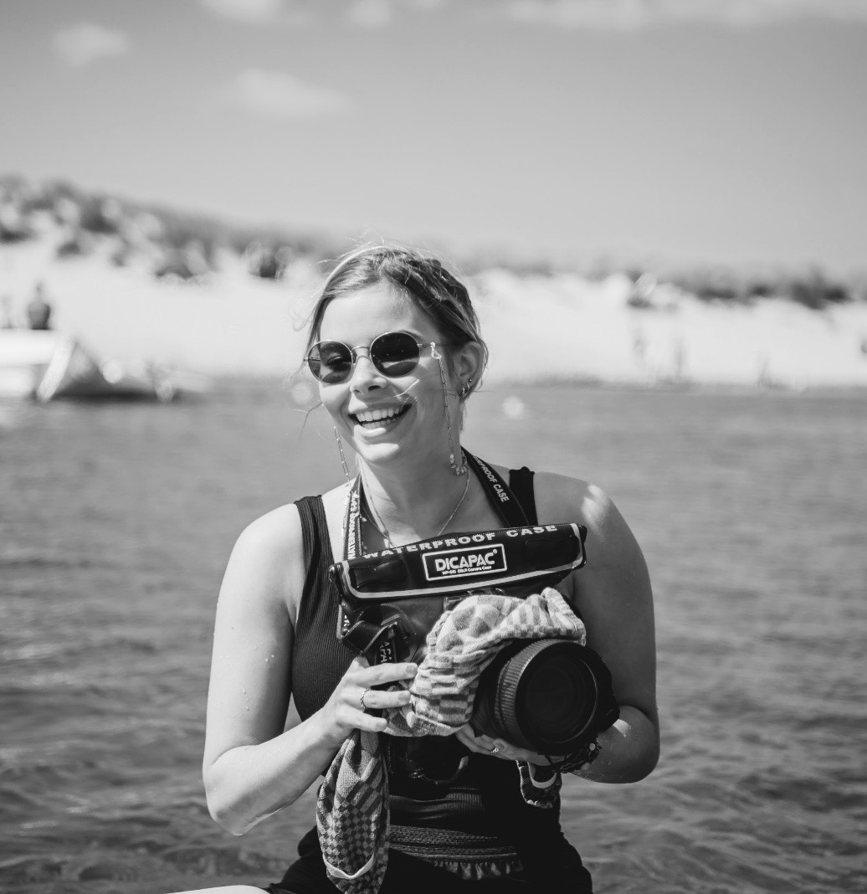
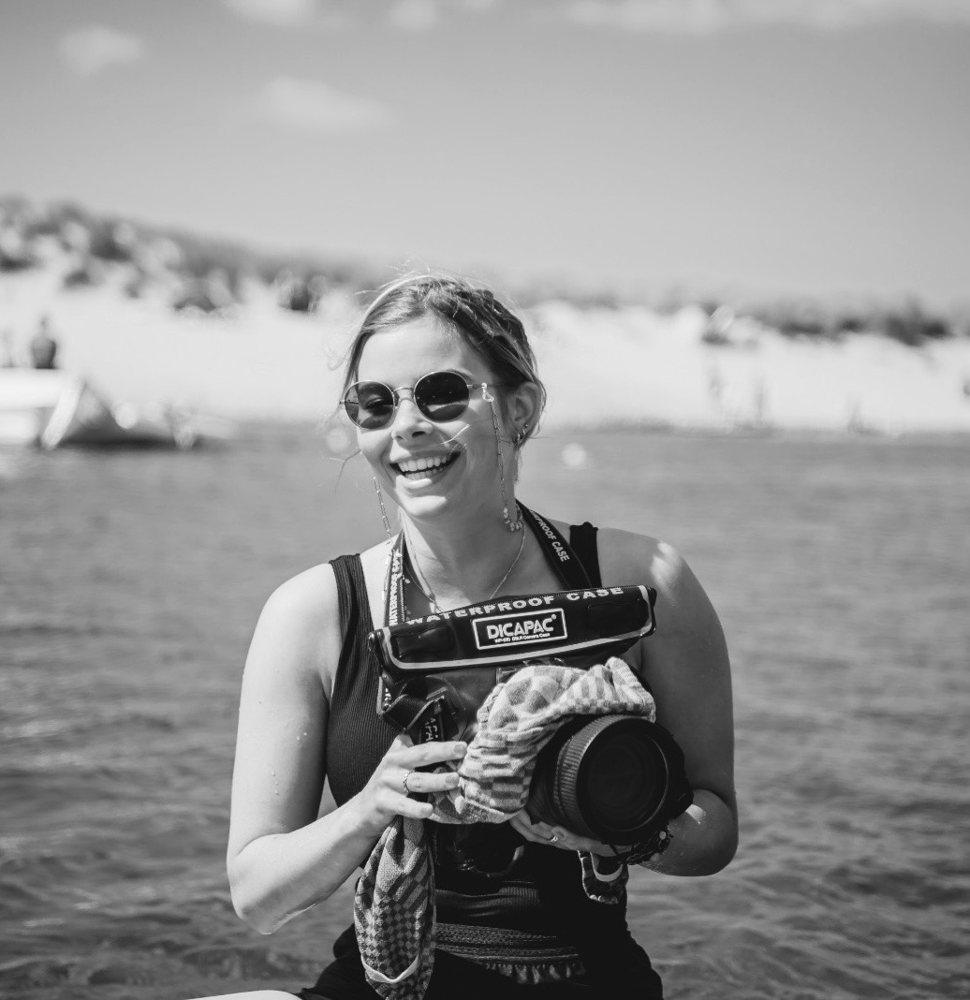

Projects
These are the project I've worked on recently.
Avocado media
KPMG Sofy Suite
BeeFriends
WeSmyle
Ilojo bar
Photography


About me
Hi! I'm Gwen Versteegh. I recently completed my studies in Communication and Multimedia Design, specializing in UX and UI design. My passion lies in creating intuitive and engaging user experiences that matter to diverse audiences. Alongside my professional interests, I have a deep love for working with children, which adds a rewarding dimension to my life. In my free time, I give surf lessons to children with a mental disorder. I enjoy surfing,photography, pole dancing, or diving into a good book. These hobbies keep me active and inspired, and I always enjoy trying new things. .
 
